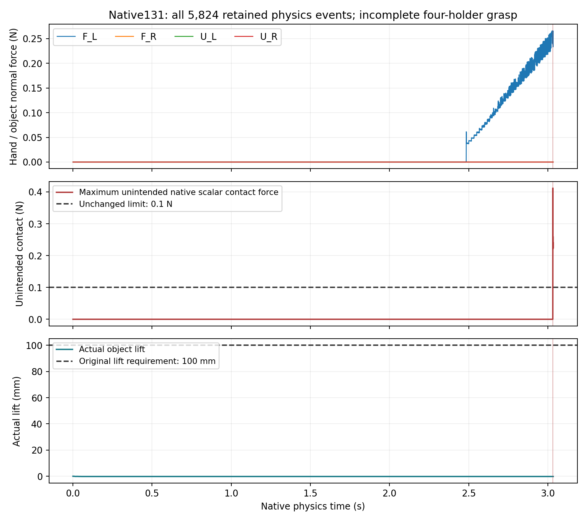
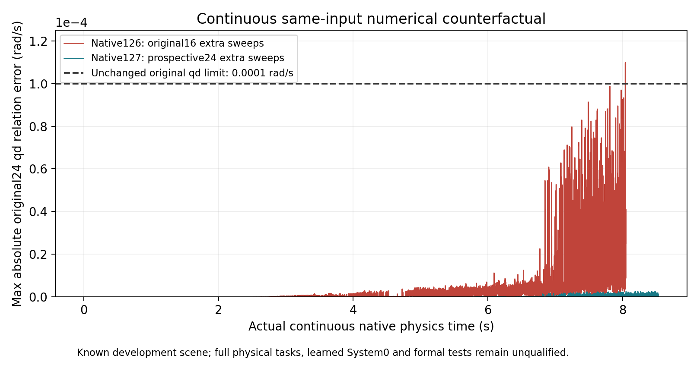

← 主面板 · 此前双手操作报告四臂完整操作：原生实验与独立验收
数据截至 Native131 闭合审计及 Native132 候选拒绝 · 2026-10-15 整理 · 实验配置 2FR3/F2＋2UR5/DFX · 尚未验证标准 2FR3＋2JAKA＋4RH56F2 配置或实体机器人。
核心结论：完整安全任务仍为 0。四臂任务运行 3.033333 秒，因右上手拇指与自身手腕接触而失败。全部独立审计执行结束；“审计进程正常结束”不代表实验通过。物体最大抬升只有 0.002265 毫米，没有真实抬起。
0完整安全任务／合格训练组
0学习训练任务／正式留出
5,824本次全部物理微步
0原生 30／120／600 秒大范围随机实验
预先规定的实验与验收
四只手必须通过真实对向接触，共同完成 CLOSE、LIFT、CARRY、PLACE、RELEASE、RETREAT。物体必须无支撑抬起至少 100 毫米、搬运至少 200 毫米，并稳定放置、真正松开及撤离。各手在抬升、搬运和撤离阶段还必须有实际关节运动。
60 Hz 控制，1,920 Hz 物理记录，32 个微步／控制周期；50 个独立电机目标进入 FIFO6，观测全部 74 个关节。保留原有 9,021 对几何检查，加入全部四根支撑柱的 568 对间隙，并使用 82 个原生逐点接触传感器。
每个微步要求：关节硬限及超速误差 ≤10⁻⁵；全部 24 条原始联动关系的位置、速度误差 ≤10⁻⁴；几何间隙 ≥0；非预期接触绝对标量力 ≤0.1 N；每手物体接触力 ≤30 N。物体位姿、速度、尺寸来自实时仿真真值，视觉感知尚未验收。无运行时关节或物体位姿改写，无附件固定约束。
这是已知开发场景的一次任务诊断，没有学习 System0，没有人类遥操，也不是随机动作测试。初始抓握姿态与测试失败用于开发，不能计入独立留出成功率。
结果与首个失败
最大非预期接触力 0.412034 N。首个失败时未发生支撑柱碰撞，原始联动位置及速度也未超限。手部源碰撞模型重建显示，拇指闭合使其与掌部基座间隙缩小，在原生报警前出现相交。原有球体代理没有覆盖这处自碰撞；源模型不等于原生烘焙碰撞证书。
原始三角网格进一步核查：最强接触点距掌部原始三角表面约6.40毫米，却距其凸包表面约0.168毫米。这支持“凸包填满手部凹槽”的假设；该掌部网格不封闭，仍不能据此确认原生烘焙形状或直接宣布修复。Native132实际执行了同一组已记录指令的有限对照，只改变一个掌部碰撞近似，并保留原始三角网格、接触开启状态、质量、关节、电机和安全阈值。默认凸分解在第一个物理步产生140,866N非预期接触，32步记录中峰值223,274N；这项候选已判失败，未采用。原始模型审计实际退出1，后续成功审计没有运行。13组初始状态绑定和76个参数数组精确一致，但这不使候选碰撞形状合格。

矢量图 SVG · 论文图 PDF · 全部事件紧凑测量轨迹
各阶段判定
失败保留在任务分母中，但本次属于开发诊断。尚无独立场景组或正式留出集，因此正式成功率尚未定义，不报告“100% 安全”或以微步数替代独立样本数。
四视角真实录像
四路相机来自同一次实际运行，起始及失败末帧均保留。帧时间逐一绑定到仿真时间；没有插帧或合成动作。视频展示未完成的抓握尝试。
俯视 · 47 个原生帧 · 最后物理时刻 3.033333 秒正视 · 47 个原生帧 · 最后物理时刻 3.033333 秒侧视 · 47 个原生帧 · 最后物理时刻 3.033333 秒总览 · 47 个原生帧 · 最后物理时刻 3.033333 秒
视频、原生帧 SHA256 与解码时间核对
数值修复与任务验收分别记录
Native126 精确复现旧失败；Native127 在同一连续输入下，将额外原始联动求解次数从 16 改为预先规定的 24，完成 8.533333 秒数值诊断，最大联动速度误差降低约 41.5 倍。所有原始安全门槛通过这段回放，但它没有完成物体任务，也没有证明任意长时间随机运动安全。

对照矢量图 · 独立配对审计
Native128 初始支撑柱碰撞失败；Native129 注册后发现末帧记录遗漏，未启动；Native130 运行包依赖缺失，在科学物理记录开始前退出。上述失败和未运行记录均保留，不能算作成功任务。
下一步与验收边界
首先修正物体夹持面与上方手腕姿态的匹配，并补齐原始手部模型的自碰撞检查。现有固定姿态下的有限检查没有找到同时让拇指与手指接近物体的可行配置，因此不会靠继续增加闭合量直接重跑。
随后执行合格的单手、双手、四手及多物体任务；收集按独立场景组划分的多样训练轨迹；训练至少三个独立种子，并在冻结模型、归一化及安全阈值后进行独立任务和 30／120／600 秒大范围连续随机测试。需要同时报告实际动作覆盖、危险抑制、任务成功、误干预与有效动作保留。当前这些科研验收尚未完成。
复核材料
公开包含独立审计、原始注册、全事件紧凑测量、首次失败的完整物理及逐点接触块、相机清单和运行退出记录。紧凑轨迹不包含全部大矩阵；全部原始 182 个物理块及对应逐点接触包保留在本地，逐块校验值在清单中。这些材料的范围与未完成验收在报告中明确区分。
数据及审计文件